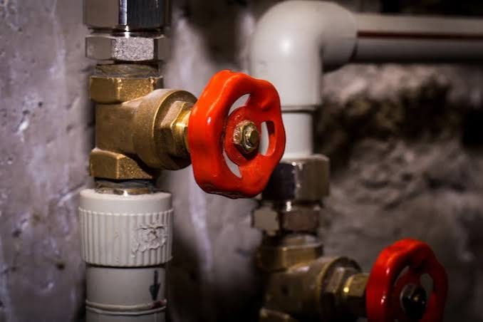

كشف تسربات الأسقف بجدة
كشف تسربات الأسقف في جدة: تقنيات متطورة دون الحاجة إلى هدم عشوائي
تُعد خدمات كشف تسربات الأسقف بجدة ضرورية للحفاظ على سلامة المنازل والفيلات والمباني التجارية، لا سيما عند ظهور علامات مثل بقع الرطوبة، أو تقطر المياه من السقف، أو تقشر الطلاء. إن معالجة تسربات المياه في مرحلة مبكرة تساعد في حماية الهيكل الإنشائي من التلف، وتُسهم في تقليل تكاليف الصيانة والإصلاح على المدى الطويل.
قد تحدث تسربات الأسقف لأسباب متنوعة، منها تلف طبقات العزل المائي، أو وجود شقوق في الخرسانة، أو تسرب مياه الأمطار، أو مشاكل في شبكات السباكة. ويُعد التحديد الدقيق لمصدر التسرب الخطوة الأولى والأهم لاختيار طريقة الإصلاح المناسبة وضمان عدم تكرار المشكلة.
ما هي أسباب تسربات الأسقف في جدة؟
تتفاوت أسباب تسربات الأسقف بناءً على طبيعة المبنى، وحالة العزل المائي، والبنية التحتية للسباكة. ومن أبرز هذه الأسباب:
تلف العزل المائي: قد يؤدي تدهور طبقات العزل أو تركيبها بشكل غير سليم إلى تسرب المياه من سطح السقف إلى الأسقف الداخلية.
الشقوق الخرسانية: يمكن أن توفر الشقوق والفجوات الإنشائية مساراً لدخول المياه إلى أجزاء مختلفة من المبنى.
تجمع مياه الأمطار: يؤدي سوء تصريف المياه أو انسداد فتحات التصريف إلى زيادة احتمالية تسرب المياه.
تسربات السباكة: قد تتسبب الأنابيب التالفة أو الوصلات غير المحكمة في ظهور بقع رطوبة على الأسقف.
غياب صيانة السقف: يؤدي إهمال الفحص الدوري إلى تفاقم مشاكل العزل المائي، مما ينتهي بحدوث تسربات.
لذا، يُنصح بشدة بفحص سطح السقف والأسقف الداخلية عند ظهور أي علامات غير طبيعية، بدلاً من الاكتفاء بإعادة طلاء المناطق المتضررة. فما هي مؤشرات وجود تسربات مياه في الأسقف؟
هناك عدة علامات قد تشير إلى وجود تسرب للمياه، منها:
ظهور بقع صفراء أو داكنة على السقف.
تقشر الطلاء أو انتفاخ طبقات اللياسة (المحارة).
تقطر المياه من السقف.
وجود رائحة عفن أو رطوبة مستمرة داخل الغرف.
ظهور شقوق أو تلف في التشطيبات الداخلية.
تكرار ظهور الرطوبة في نفس المكان حتى بعد إعادة الطلاء.
طرق الكشف عن تسربات الأسقف دون الحاجة إلى الهدم
تعتمد الأساليب المستخدمة للكشف عن تسربات الأسقف على طبيعة المشكلة وموقعها. وهناك عدة تقنيات يمكن أن تساعد في تحديد مصدر التسرب بدقة، منها:
1. أجهزة قياس الرطوبة: تساعد هذه الأجهزة في تحديد المناطق التي ترتفع فيها مستويات الرطوبة داخل مواد بناء معينة.
2. التصوير الحراري: يمكن أن يساعد في الكشف عن تباينات درجات الحرارة المرتبطة بوجود الرطوبة، مع ضرورة تفسير النتائج في ضوء الظروف الخاصة بالمبنى.
3. فحص شبكات السباكة: يُستخدم هذا الإجراء عند الاشتباه في أن التسرب ناتج عن أنابيب أو وصلات أو دورات مياه موجودة في الطابق العلوي.
4. فحص العزل المائي: يتضمن ذلك فحص طبقات العزل المائي للأسقف، والفواصل، ومناطق تصريف المياه لتحديد نقاط الخلل المحتملة.
تساعد هذه الأساليب في تقليل الحاجة إلى عمليات الهدم العشوائية. ومع ذلك، فإن اختيار تقنية الفحص المناسبة يعتمد على نوع التسرب، وقد يتطلب تحديد المصدر الدقيق للمشكلة إجراء اختبارات إضافية. أفضل الطرق لمعالجة تسربات الأسقف
تبدأ معالجة تسربات الأسقف بتحديد السبب الجذري للمشكلة، يليها تنفيذ الإصلاحات المناسبة. فإذا كان الخلل ناتجاً عن تلف في العزل المائي، فقد يتطلب الأمر إصلاح المناطق المتضررة أو تجديد طبقات العزل. أما إذا كان التسرب ناتجاً عن شقوق في الخرسانة، فيجب معالجتها باستخدام طريقة تتناسب مع طبيعة تلك الشقوق.
وفي الحالات التي تكمن فيها المشكلة داخل شبكة السباكة، يجب أولاً إصلاح الأنبوب أو الوصلة التالفة. وبمجرد معالجة مصدر التسرب وجفاف المنطقة تماماً، يمكن البدء في ترميم الطلاء والتشطيبات الداخلية.
من المهم ألا يقتصر التعامل مع المشكلة على معالجة الآثار الظاهرة للرطوبة؛ فإخفاء البقع دون إصلاح مصدر تسرب المياه سيؤدي غالباً إلى عودة المشكلة من جديد.
أهمية العزل المائي للأسقف في الوقاية من التسربات
يُعد العزل المائي للأسقف إجراءً جوهرياً لمنع تسرب مياه الأمطار والرطوبة إلى داخل المبنى. فاختيار نظام العزل المائي المناسب وتركيبه بشكل صحيح يسهم في حماية السقف والهيكل الخرساني. كما تتضمن هذه العملية ضمان كفاءة تصريف المياه، وإحكام غلق الفواصل، والتحقق من سلامة طبقات العزل. بالإضافة إلى ذلك، يُنصح بإجراء فحص دوري للسقف، لا سيما قبل حلول موسم الأمطار أو عند ملاحظة تجمّع المياه في مناطق معينة.
لماذا ينبغي عليك الاستعانة بمتخصص في كشف تسربات الأسقف في جدة؟
تساعد الاستعانة بجهة محترفة للكشف عن تسربات الأسقف في تحديد المصدر الدقيق للمشكلة، وضمان اختيار طريقة الإصلاح المناسبة، مما يجنّبك القيام بإصلاحات غير ضرورية أو غير فعالة.